Токио · Сэтагая · архитектура
Голубой особняк Тэодоры Одзаки: дом эпохи Мэйдзи, который спасли мангаки
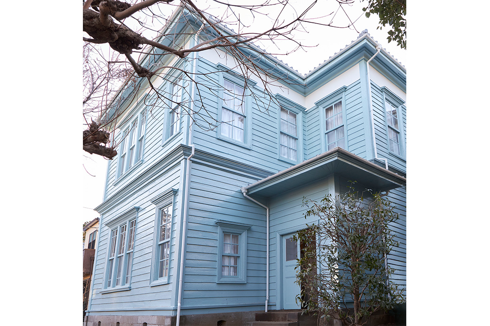
В тихом жилом квартале Готокудзи в токийском районе Сэтагая среди обычных домов вдруг возникает голубой деревянный особняк с высокими окнами. Ему больше 130 лет, в 2019–2020 годах его едва не снесли, а спасли его авторы манги: две из них вложили в дом почти всё, что у них было.
Спасение
Дом, который выкупили мангаки
Особняк Тэодоры Одзаки считают самым старым западным домом в районе Сэтагая. Окрашенный в небесно-голубой цвет и окружённый садом, он стоит посреди жилого квартала Готокудзи, и местные жители давно прозвали его «голубым особняком». На рубеже 2019 и 2020 годов дому грозил снос.
Этот дом любила мангака Кадзуми Ямасита, автор манги «Ланд» и «Жизнь профессора Янагисавы». Вместе с коллегой Нами Сасо она учредила общественную организацию для сохранения особняка. Обе вложили в проект почти всё своё состояние, помог и муж Нами Сасо, мангака Тацуо Нитта, автор манги «Тихий Дон» (1988–2013), комедии о скромном дизайнере женского белья, который втайне становится главой клана якудза. Снос удалось остановить: участок и дом выкупили, и особняк перешёл к организации.
Но спасти дом от бульдозера оказалось только половиной дела. Деревянной постройке эпохи Мэйдзи было больше ста лет, она ветшала, и сразу открыть её для гостей было нельзя. Ремонт обошёлся очень дорого: стройматериалов не хватало, цены росли. Деньги дали несколько мангак, одолжив их без процентов, и участники краудфандинга.
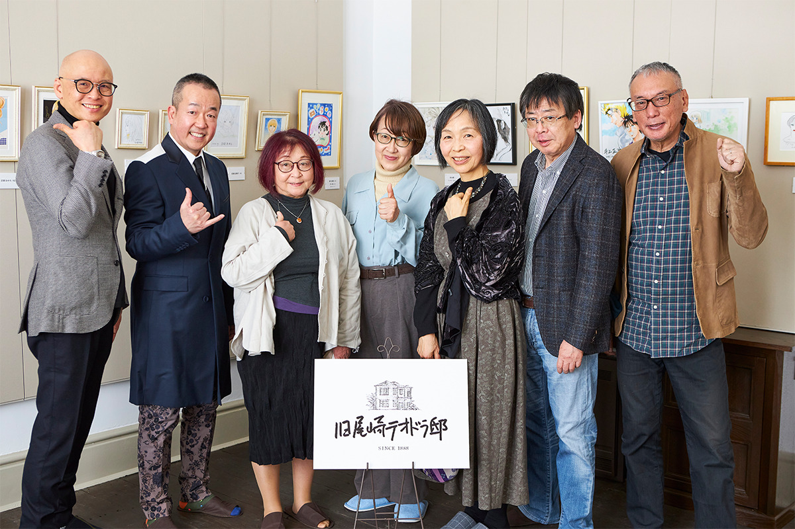
На призыв откликнулись живые легенды манги. Проект поддержали Норифуса Мита («Дорагон дзакура»), Румико Такахаси («Доходный дом Иккоку», «Несносные пришельцы»), Нобуюки Фукумото («Кайдзи»), Нобору Такахаси («Песнь крота»), Тэцуя Тиба («Завтрашний Джо»), Осаму Акимото («Полицейский участок у парка Камэари в Кацусике»), Го Нагай («Мазингер Z», «Милашка Хани») и Ваки Ямато («Хайкара-сан идёт»). В марте 2024 года особняк открылся для гостей: с галереей, магазином и кафе. Галерея показывает оригиналы рисунков мангак, и дом задумывался как место, откуда о японской манге узнают и в Японии, и за её пределами.
История
Дочь барона и «бог конституционного правления»
Особняк, как принято считать, построил в 1888 году барон Сабуро Одзаки (1842–1918) для своей дочери Тэодоры. Сабуро Одзаки был японцем, а Тэодора родилась в Англии, и в ней смешалась японская и английская кровь. Сначала дом стоял в районе Минато. Позже его получил специалист по английской литературе: он разобрал особняк и в 1933 году собрал на нынешнем месте в Готокудзи.
С домом связана почти романтическая история. Из-за письма, которое по ошибке попало не к тому Одзаки, Тэодора познакомилась со своим будущим мужем Юкио Одзаки (1858–1954). Юкио Одзаки много десятилетий занимался большой политикой, его называли «богом конституционного правления» и «отцом парламентской политики». Сама Тэодора Одзаки (1870–1932) переводила японские сказки и знакомила с ними читателей за границей. Бродя по комнатам, легко представить себе её жизнь.
За свою долгую жизнь дом повидал разное. В эпохи Мэйдзи, Тайсё и Сёва здесь одно время был многоквартирный дом, где в тесноте жили сразу несколько семей. Старое дерево, отполированное этой долгой жизнью, оставили в полах и стенах. Голубой цвет стал визитной карточкой особняка не сразу: когда-то его стены были розовыми и даже оливково-зелёными.
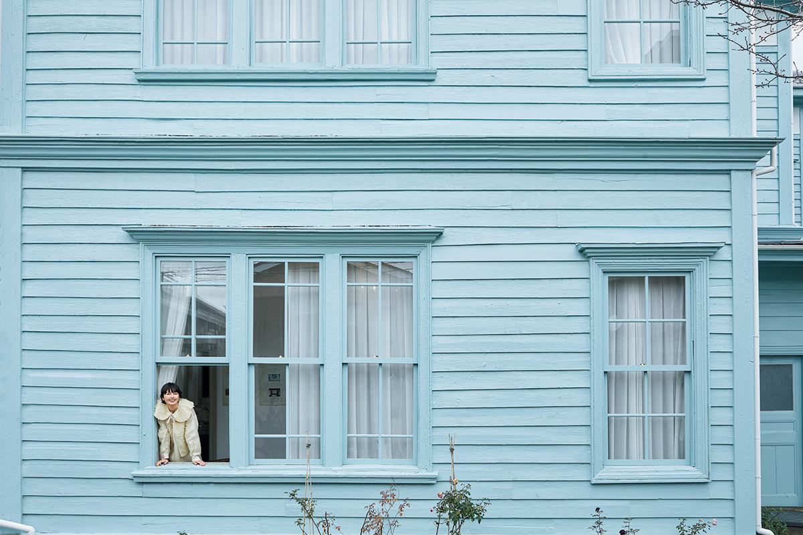
Реставрация
Ремонт, как в старой чайной
Реставрация заняла около двух лет, и архитектор, который ею руководил, не скрывает, что путь был трудным. Подъёмные окна, например, пришлось делать с нуля: у них тонкий механизм с блоками и противовесами.
«Технически это сложно и стоит огромных денег. Готовые окна обошлись бы проще и дешевле, но тогда пропал бы смысл западного особняка. Организация решила, что детали, по которым чувствуется старый дом, не обсуждаются. Дом сохранили её упорство и чувство красоты»
архитектор, руководивший реставрацией
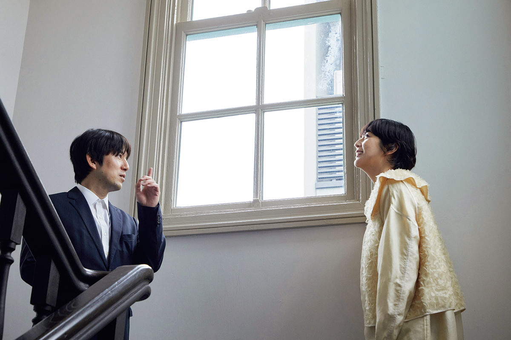
Западный дом эпохи Мэйдзи, объясняет архитектор, на самом деле японская постройка, подражающая иностранным зданиям. Когда начали ремонт, оказалось, что прочный фундамент и аккуратные детали выдают мастерство и гордость тогдашних плотников. Старую ручную работу сохранили, а электричество, вентиляцию и защиту от землетрясений добавили ровно столько, сколько нужно. Свой подход архитектор, специалист по домам в стиле сукия, сравнивает с ремонтом старой чайной.
Стёкла, которые уцелели, старались использовать снова. В окне над лестницей стоит особенно старое стекло: волнистое, сделанное вручную, и вид за ним чуть плывёт.
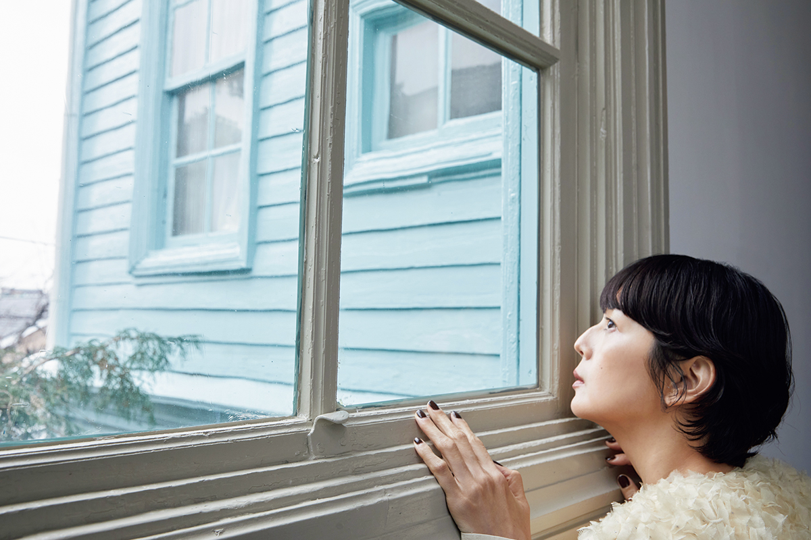
Особняк осматривала модель и актриса, которая с детства увлекалась планировками, изучала архитектуру в техникуме и в университете и любит жилые дома. Работа реставраторов её впечатлила.
«Всё, что добавили, вписалось так, будто было здесь с самого начала. Так получается, только если уважаешь старое. В этом главное достижение реставрации»
модель и актриса, изучавшая архитектуру
Новую мебель и светильники заказывали специально или подбирали среди антиквариата, чтобы они подходили дому по времени и по материалу.
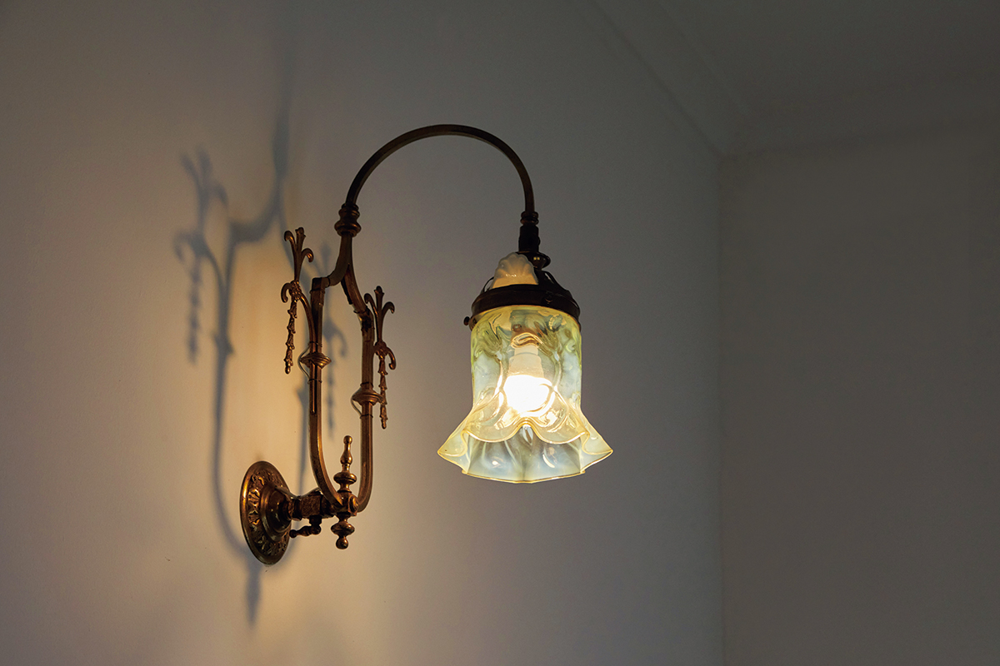
Высота потолков здесь 3,5 м. В лестничном пролёте, главном украшении дома, свет падает сквозь старое стекло, и гостья не удержалась: «Как красиво». Ещё больше её восхитили детали по углам: мягкий изгиб карниза под потолком, плинтусы из цельной доски, наличники дверей.
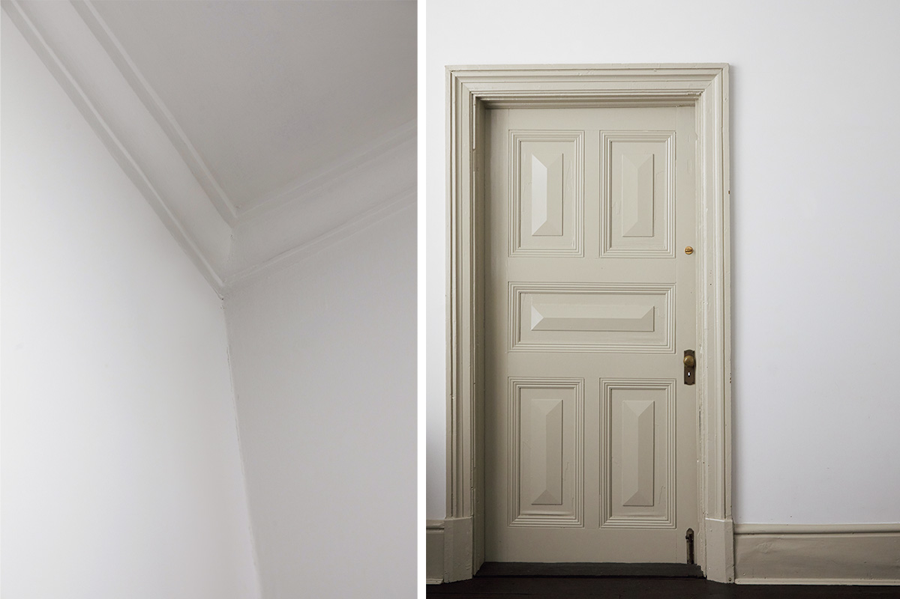
«Особенно плинтусы. В современных домах это часто просто украшение, а здесь плинтус и укрепляет стену, и красив. И цвет не скучный коричневый или белый, а серо-бежевый. Безупречный вкус!»
модель и актриса, изучавшая архитектуру
Дом сегодня
Кафе, галерея и магазин
Особняк больше не жилой дом. Второй этаж занимает галерея, которую ведут мангаки, на первом этаже работает кафе в старинном духе, и гости приезжают сюда и из Японии, и из-за границы.
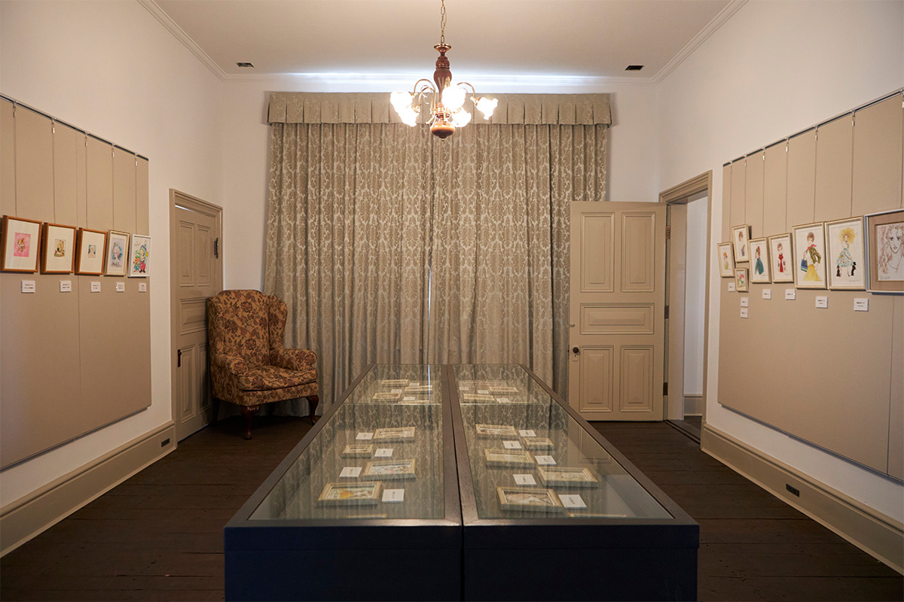
Главный зал второго этажа отдан под выставки, здесь показывали оригиналы рисунков популярных авторов, и для поклонников манги галерея стала местом паломничества. В 2025 году здесь даже прошёл концерт, на котором мангака пел под собственный аккомпанемент.
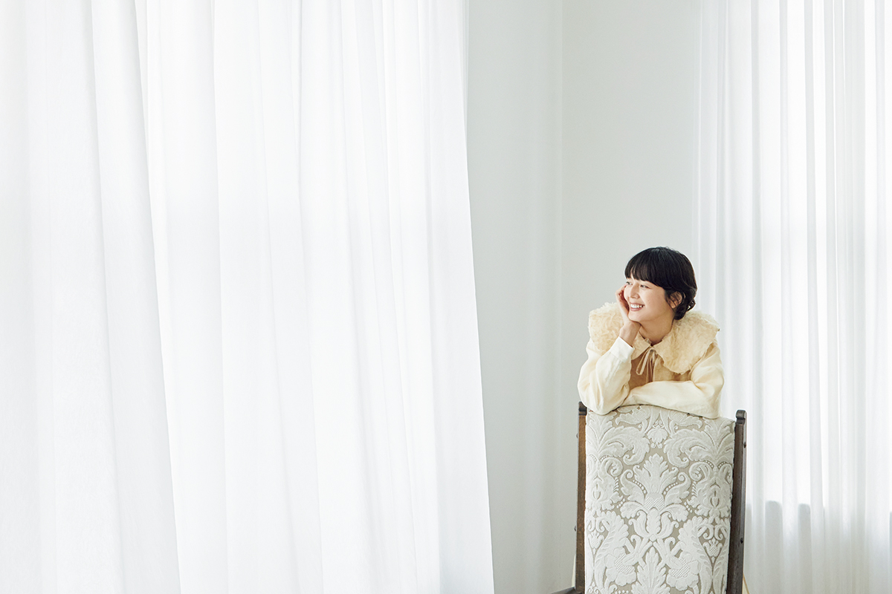
«В старых домах, которые охраняют как памятник и где ничего нельзя трогать, я всегда напряжена. А когда можно вот так спокойно посидеть, красота здания становится близкой»
модель и актриса, изучавшая архитектуру
Кафе на первом этаже занимает две смежные комнаты. Маленькое окошко в стене когда-то было раздаточным окном из кухни. К фирменному чаю особняка подают торты и сконы, которые печёт свой кондитер, а по предварительной записи можно заказать послеобеденный чай.
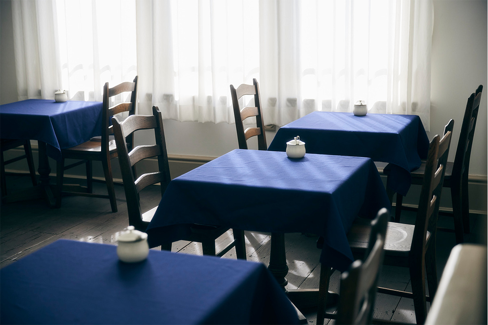
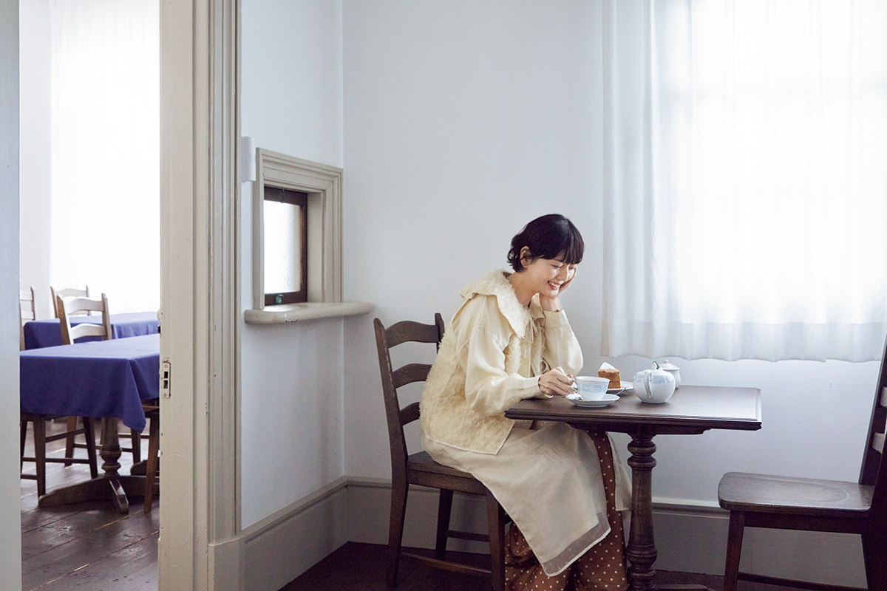
В магазине на первом этаже продают чашки с блюдцами и платки с рисунком «Кошка и Тэодора», а к каждой выставке делают свои товары.
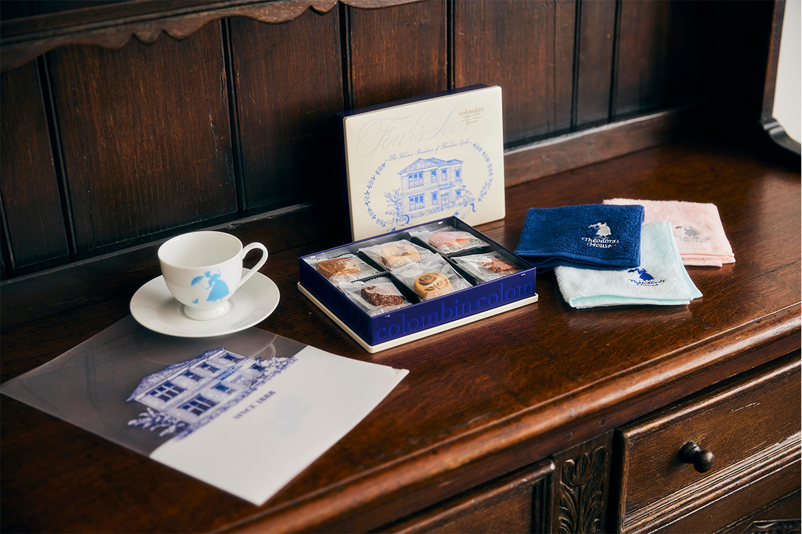
Для гостьи этот дом оказался не только про архитектуру. Она любит старые кафе и знает, что многие из них с необычными интерьерами могут исчезнуть, когда хозяева состарятся.
«Я как раз думала, можно ли что-то сделать, и в том, как мангаки спасли этот дом, увидела надежду»
модель и актриса, изучавшая архитектуру
Особняк Тэодоры Одзаки
- Адрес
- Токио, Сэтагая, Готокудзи, 2-30-16
- Телефон
- +81 3-6413-5413
- Часы работы
- 10:00–18:00
- Выходные
- четверг, а также дни смены выставок
- Цены / Вход
- галерея 1 000 иен; место в кафе с входом в галерею 1 000 иен (по записи); послеобеденный чай с входом в галерею 5 950 иен. Дошкольники бесплатно
Посещение по предварительной записи, оплата только безналичная. Парковки нет. В доме ходят без уличной обуви, тапочки выдают. С детскими колясками в дом нельзя.
Фото: Кэнта Ёсидзава.